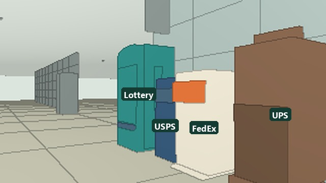
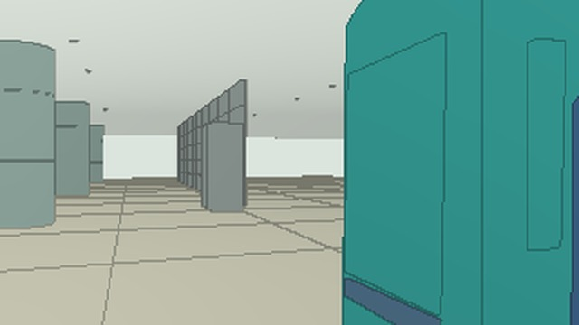
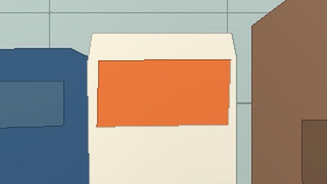

Airport parcel counter
Stop at the FedEx box, facing its orange drop slot.
A robot passes a pillar and turns toward one of four neighboring machines. Check where it stops and what it can see.
First-person evidence
Instance geometry
What did the robot see?
Along-route memory“Return to the lottery machine you passed.”


These frames establish when to ask the question. A memory score requires running an agent on the return task.
Load local RGB evidence
Authorized collaborators can open their airport evidence file to examine textured robot views and original camera references on this device.
Approach area
Top viewEdit coordinates
Coordinates use local reconstruction units.
Review this stop
Share the exported file with the review lead.
How this case was checked
A collision-checked cylinder executed 30 actions and produced 31 aligned RGB, depth and instance observations. Floor support was sampled at 245 positions. A forward motion into the cabinet was blocked. The path covers 4.44 reconstruction units. The estimated scale gives 3.55–4.22 m. Physical scale and the human-drawn boundaries still need independent validation.
The draft measures region entry (H), shortest walkable distance from the stop to an allowed approach area (A, within 3 m), and a final pose within 2 m facing the visible task part (S). Facing and reverse controls use the same base position and the original candidate area.
Public frames color each object instance and shade it by measured depth. Synchronized local evidence adds the full RGB view.
Source collection: DL3DV-GS-960P · Dataset terms